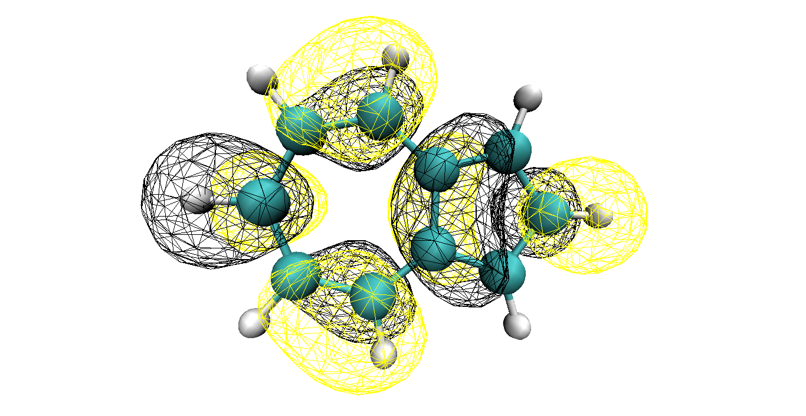
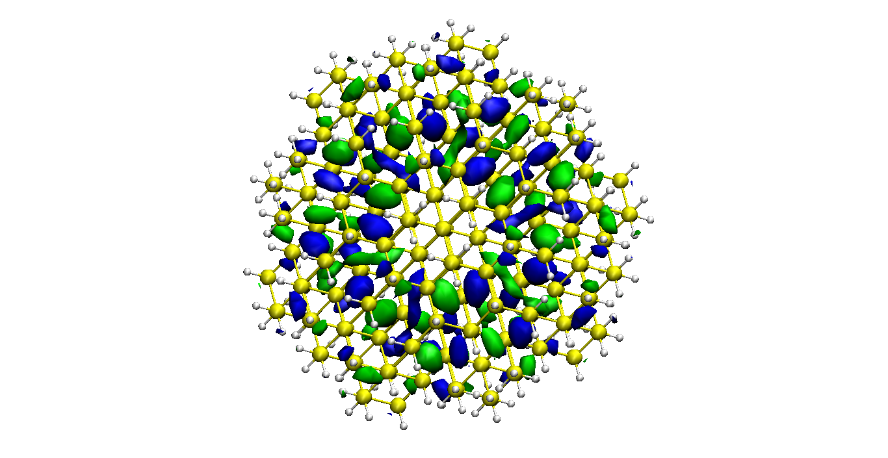
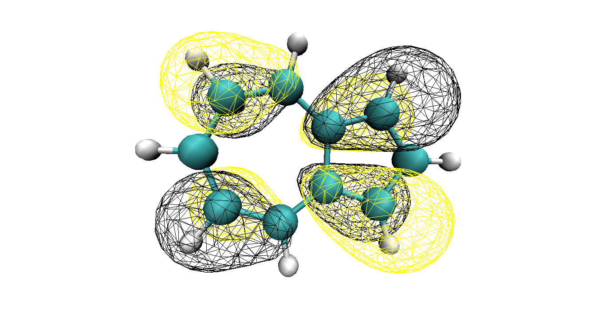
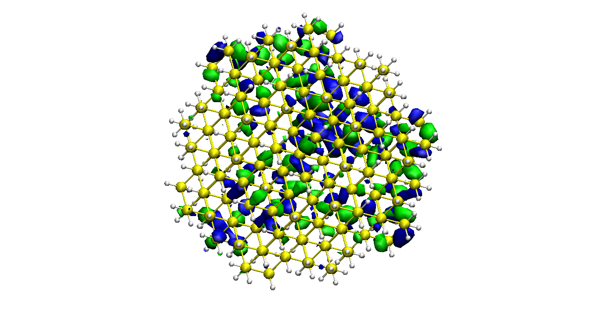

Exact and quantum-classical solution of TD-SE (Time-Dependent Schrodinger Equation)
Case 1. Large perturbation, large periodicity.
Case 2. Large perturbation, small periodicity.
Case 3. Unperturbed 2-state Rabi model.
Atomistic nonadiabatic quantum dynamics (NAQD) simulations
Case 1. Photoisomerization of cis-azobenzene.
Case 2. Photoisomerization of cis-azobenzene in the presence of thermostat.
Semiempirical electronic structure and orbital analysis tools

Azulene LUMO, isovalue = 0.025.

Si QD (2.4 nm diameter) LUMO, isovalue = 0.01.

Azulene HOMO, isovalue = 0.025.

Si QD (2.4 nm diameter) HOMO, isovalue = 0.01.